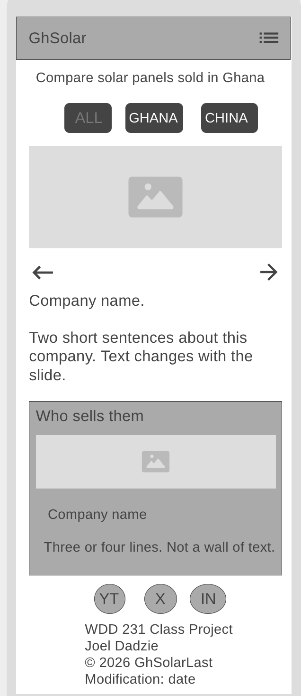
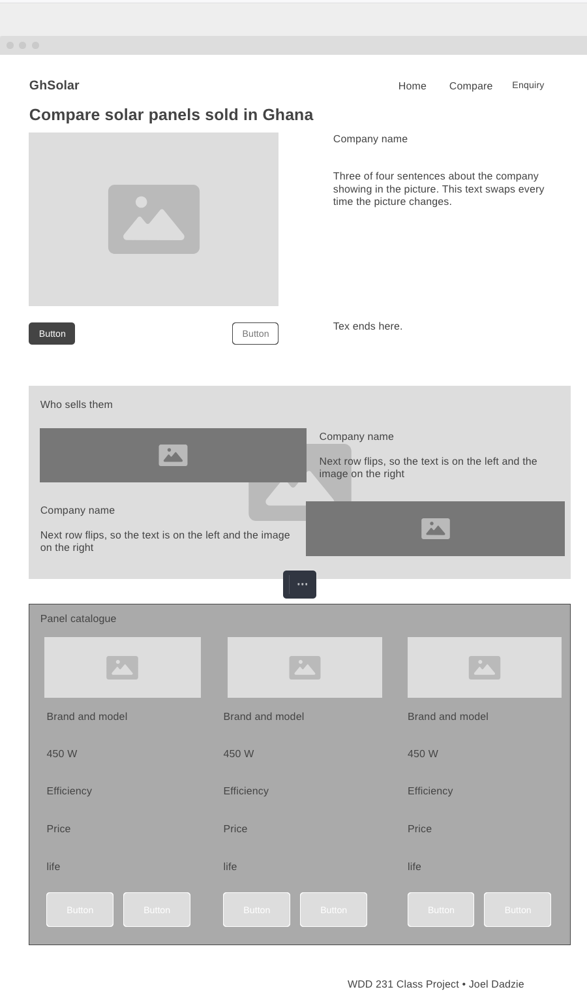

Site Name
GhSolar
The name joins Gh, the short form of Ghana used in the country code and in the .gh domain, with Solar, the product the site is about. It is short, easy to say out loud and easy to spell after hearing it once, which matters because most people in Ghana will reach the site on a phone after being told about it by someone else. It also makes the market clear straight away. People will know that this is solar pricing for Ghana, in Ghana cedis, not a general world catalogue.
A domain such as ghsolar.com or ghsolar.com.gh would suit the site. Availability has not been checked, as buying a domain is not required for this class.
Site Purpose
GhSolar helps people in Ghana choose a solar panel by putting the real numbers side by side. The site provides a catalogue of at least fifteen panels with their wattage, efficiency, price in Ghana cedis, expected lifespan and the company that sells them.
Because most panels used in Ghana are imported from China, the catalogue can be viewed three ways: all panels, only those bought locally in Ghana at a local retail price, or only those imported directly from China. Panels imported from China show an estimated landed cost, which is the base price plus an estimate of import and clearing charges. These totals are always labelled as estimates, never as firm quotes.
The site also provides a comparison page where a visitor can line up the panels they saved and see which one gives the most power per cedi, a short guide to why the import cost matters, and an enquiry form for visitors who want help choosing.
Scenarios
These are the questions a visitor to GhSolar is likely to arrive with:
- Which solar panel gives me the most power for my money in cedis?
- Is it cheaper to buy a panel here in Ghana, or to import it from China once I add clearing costs?
- How many years should a panel last before I have to replace it?
- Which company actually sells the panel I have picked?
Colour Scheme
Four colours are used across the whole site, built around sea blue. The deeper blue carries the header and headings, while the lighter sea glass blue is kept for accents. Sea glass is never used for small text because it is too light against a pale background, so it is used behind dark text or as a border instead.
Deep Sea
#0B4F6C
Header and footer backgrounds, main headings, the navigation bar and button borders.
Sea Glass
#57B8CC
Accents only: the underline beneath each heading, the selected view button, card borders and the highlight behind an estimated price.
Deep Ink
#12232E
All body paragraphs, list items, panel specifications and form labels. It is a very dark blue rather than a plain black, so it sits with the other two blues.
Sea Foam
#F4FAFC
The page background and the inside of every card. It is an off white with a faint blue in it, which is softer to read against than pure white.
Typography
Two fonts are used, and both are used on this planning document.
Space Grotesk
450 W panel, 21.3% efficient
Used for all headings, the site name in the header, the navigation links and the button labels. It was chosen because its slightly squared letters give the site a technical feel that suits equipment, while still staying clear at small sizes on a phone.
IBM Plex Sans
450 W panel, 21.3% efficient
Used for every paragraph, list, table of specifications and form label. It was made for technical writing, so its numbers are easy to tell apart. That matters on a site full of watts, percentages and cedi prices sitting in a comparison table.
Wireframe
Black and white sketches of the home page. They show structure and layout only, with no colour, fonts or real images. The home page has a header, a hero holding the three view buttons and a sliding company picture, a band introducing the companies, the panel card grid, and the footer.

